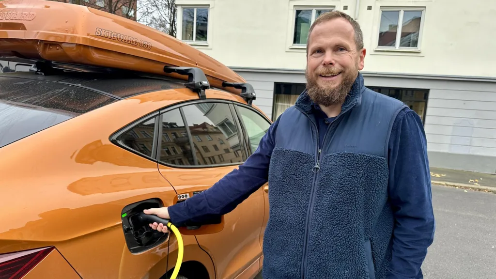
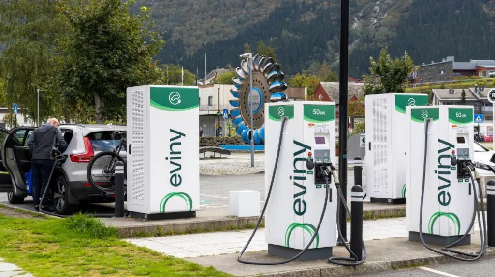
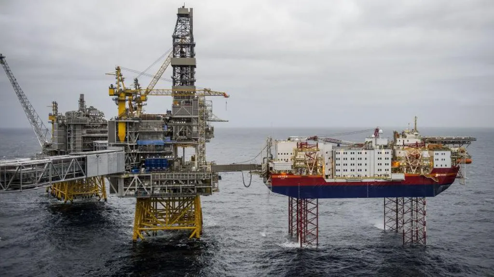

Adrienne Murray
Business reporter
Reporting from Oslo

For more than 75 years Oslo-based car dealership Harald A Møller has been importing Volkswagens, but early in 2024 it bid farewell to fossil fuel cars.
Now all the passenger vehicles for sale in its showroom are electric (EV).
"We think it's wrong to advise a customer coming in here today to buy an ICE [internal combustion engine] car, because the future is electric," says chief executive Ulf Tore Hekneby, as he walks around the cars on display. "Long-range, high-charging speed. It's hard to go back."
On the streets of Norway's capital, Oslo, battery-powered cars aren't a novelty, they're the norm. Take a look around and you'll soon notice that almost every other car has an "E" for "electric" on its licence plate.
The Nordic nation of 5.5 million people has adopted EVs faster than any other country, and is on the cusp of becoming the first to phase out the sale of new fossil fuel cars.
Last year, the number of electric cars on Norway's roads outnumbered those powered by petrol for the first time. When diesel vehicles are included, electric cars account for almost a third of all on Norwegian roads.
And 88.9% of new cars sold in the country last year were EVs, up from 82.4% in 2023, data from the Norwegian Road Federation (OFV) showed.
In some months sales of fully electric cars were as high as 98%, as new petrol or diesel car purchases almost fizzled out.
By contrast, in the UK electric cars made up only 20% of new car registrations in 2024. Although this was a record high, and up from 16.5% in 2023.
In the US, the figure was just 8% last year, up from 7.6%.

Norway is undoubtedly an EV pioneer, but this electric revolution has been three decades in the making.
"It started already in the early 1990s," says Christina Bu, the secretary general of the Norwegian EV Association, as she took me for a spin around Oslo in an electric minivan.
"Little by little taxing petrol and diesel engine cars more, so they have become a lot more expensive to purchase, whereas electric cars have been exempted from taxes."
The support for electric vehicles was first introduced to help two Norwegian manufacturers of early EVs, the Buddy (previously Kewet) and TH!NK City. While they went out of business, the incentives for greener vehicles remained.
"It's our goal to see that it's always a good and viable choice, to choose zero emission," says Norway's Deputy Transport Minister, Cecilie Knibe Kroglund.
Even though it's a major oil and gas producer, Norway aims for all new cars sold to be "zero emission", starting at some point in 2025. A non-binding goal was set back in 2017, and that milestone now lies within reach.
"We are closing up on the target, and I think that we will reach that goal," adds Kroglund. "I think we have already made the transition for passengers cars."
Key to Norway's success has been long-term and predictable policies, she explains.
Rather than banning combustion engine vehicles, the government has steered consumer choices. In addition to penalising fuel fossil vehicles with higher taxes and registration fees, VAT and import duties were scrapped for low-emission cars.
A string of perks, like free parking, discounted road tolls and access to bus lanes, then followed.
By comparison, the European Union plans to ban sales of new fossil-fuel cars by 2035, and the UK's current government wants to prohibit their sale in 2030.
Petrol and diesel car sales are still permitted in Norway. But few are choosing to buy them.

For many locals, like Ståle Fyen, who bought his first EV 15 months ago, going electric made economic sense.
"With all the incentives we have in Norway, with no taxes on EVs, that was quite important to us money wise," he says while plugging in his car at a charging station in the capital.
"In the cold, the range is maybe 20% shorter, but still, with the expansive charging network we have here in Norway, that isn't a big issue really," Mr Fyen adds. "You just have to change your mindset and charge when you can, not when you need to."
Another driver, Merete Eggesbø, says that back in 2014 she was one of the first people in Norway to own a Tesla. "I really wanted a car that didn't pollute. It gave me a better conscience driving."
At Norwegian petrol stations many fuel pumps have been replaced by fast-charging points, and across Norway there are now more than 27,000 public chargers.
This compares with 73,699 in the UK - a country 12 times bigger in terms of population.
That means that, per 100,000 people, Norway has 447 chargers while the UK has just 89, according to a recent report.
Tesla, VW and Toyota, were Norway's top-selling EV brands last year. Meanwhile, Chinese-owned marques - such as MG, BYD, Polestar and XPeng - now make up a combined 10% of the market, according to the Norwegian Road Federation.
Norway, unlike the US and EU, has not imposed tariffs on Chinese EV imports.
Ms Bu says there's "not really any reason why other countries can not copy Norway". However, she adds that it is "all about doing it in a way that can work in each country or market".
Norwegians aren't more environmentally-minded than people elsewhere, she reckons. "I don't think a green mindset has much to do with it. It has to do with strong policies, and people gradually understanding that driving an electric car is possible."
Yet Norway is also a very wealthy nation, which thanks to its huge oil and gas exports, has a sovereign wealth fund worth more than $1.7tn (£1.3tn). This means it can more easily afford big infrastructure-build projects, and absorb the loss of tax revenue from the sale of petrol and diesel cars and their fuel.
The country also has an abundance of renewable hydro electricity, which accounts for 88% of its production capacity.
"A third of cars are now electric, and it will pass 50% in a few years," says Kjell Werner Johansen from the Norwegian Centre for Transport Research. "I think the government accepts that a few new petrol or hybrid cars will still be on the market, but I don't know anybody who wants to buy a diesel car these days."